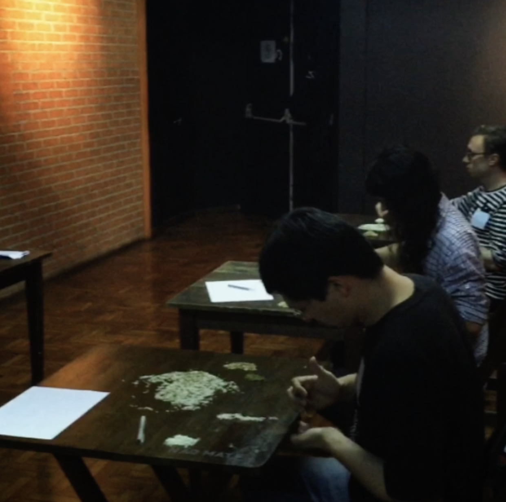
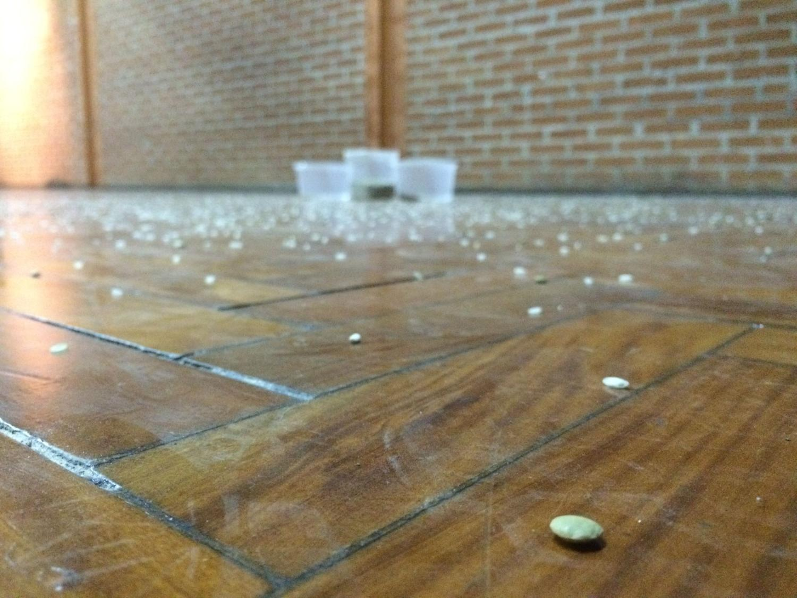

Avenir

Avenir (French for what is to come) confronts the rigidity of 17th-century political structures with the mutability of art. It resists the stale sovereignty of nation-states, whose grasp over identity, morality, and “internal matters” remains absurd in a globally entangled, hyper-communicative world. These bureaucracies function like outdated software, patched over but never rewritten, while the political imagination stagnates inside archaic frames of representation.
Avenir imagines what it means to dissolve those frames through artistic experience. Co-created with curator Denis Maksimov, it proposes that performance is a pre-political site where new ways of being can take shape: Unregulated, borderless, ungoverned. Each activation was a living artwork: a temporary, untitled society that used relational aesthetics to build community without predefined laws or ends.

At Matilha Cultural in Sao Paulo, participants immersed themselves in live interventions that asked: What structures do we carry? What would it mean to lay them down and begin again, not with words, but with presence? The gallery became an incubator of futures that could not be legislated or reduced to rhetoric.


The project culminated in The Louvres Manifesto, a happening staged inside the Louvres Museum. There, I stood before Veronese’s The Wedding at Cana and performed a poetic address to Mona Lisa, symbol of cultural fossilization. Surrounded by two performers, I carried a blue umbrella and shouted into the stillness. The act drew guards who asked: “If you don’t want to look at the Mona Lisa, why come here?” I wrote that down.
The performance was not an act of rebellion but of reminder. That art is a form of sovereignty. That the future is not a timeline but a tension. That nothing is final, not even the nation. Not even the name. Avenir holds that art is the new assembly. The next frontier isn’t mapped, it’s summoned.


